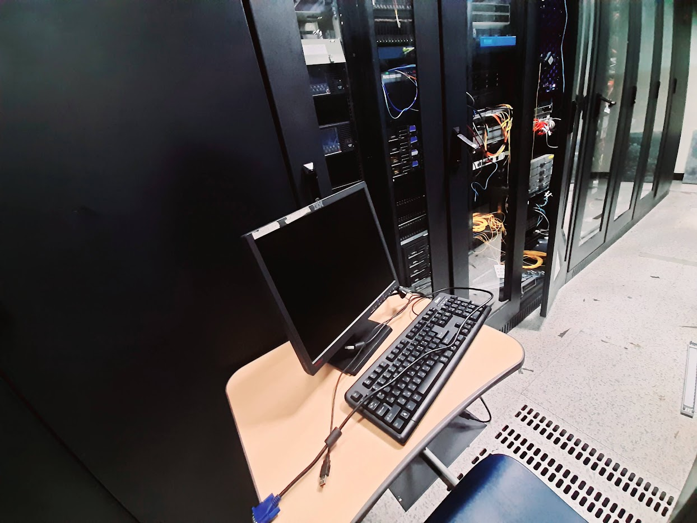

Disaster Recovery Center (DRC) — Backup & Business Continuity
Designed and implemented a Disaster Recovery Center (DRC) to ensure business continuity through real-time backup, replication, and high availability of critical systems.
The Disaster Recovery Center acts as a redundant backup site for the primary data center, ensuring that services remain operational even in the event of hardware failure, cyber incidents, or natural disasters. This architecture significantly minimizes downtime and data loss.
Aim & Vision
The primary goal of this project was to establish a reliable Business Continuity and Disaster Recovery (BCDR) framework that protects mission-critical data and services.
- Ensure uninterrupted business operations
- Provide redundancy for critical IT infrastructure
- Enable rapid recovery during disaster scenarios
- Protect data integrity and availability
Architecture Overview
The DRC was deployed at IDMC’s Disaster Recovery Office in Hetauda, operating as a geographically separate backup location. Data from the primary site is continuously replicated to the DRC, enabling rapid failover if the main site becomes unavailable.
- Primary Data Center → Real-time replication
- Secure network connectivity between sites
- Dedicated backup servers and storage systems
- Failover-ready infrastructure for critical services
Key Responsibilities
- Designed backup and replication architecture
- Implemented secure data synchronization between sites
- Configured backup schedules and retention policies
- Tested disaster recovery and failover scenarios
- Monitored backup integrity and recovery readiness
Backup & Replication Strategy
IDMC’s comprehensive Backup and Replication services ensure data protection against multiple threat vectors.
- Real-time and scheduled data replication
- Protection against hardware failures
- Defense against cyberattacks and ransomware
- Disaster resilience for earthquakes, floods, and power outages
Technologies & Infrastructure
Backup & Replication Systems
Enterprise Servers & Storage
Secure WAN Connectivity
Monitoring & Alerting Tools
Disaster Recovery Planning & Testing
Outcome & Impact
✔ Achieved high availability through site-level redundancy
✔ Significantly reduced Recovery Time Objective (RTO)
✔ Ensured minimal data loss with defined Recovery Point Objective (RPO)
✔ Enabled confident disaster preparedness and business continuity
This project demonstrates my hands-on experience in designing, implementing, and operating enterprise-grade Disaster Recovery and Business Continuity solutions.
Video 1 –Dell Infrastructure Management